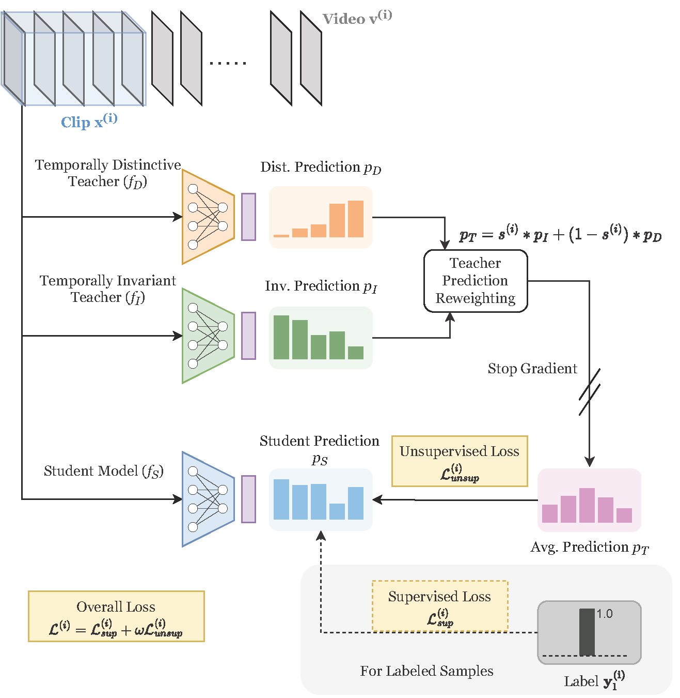
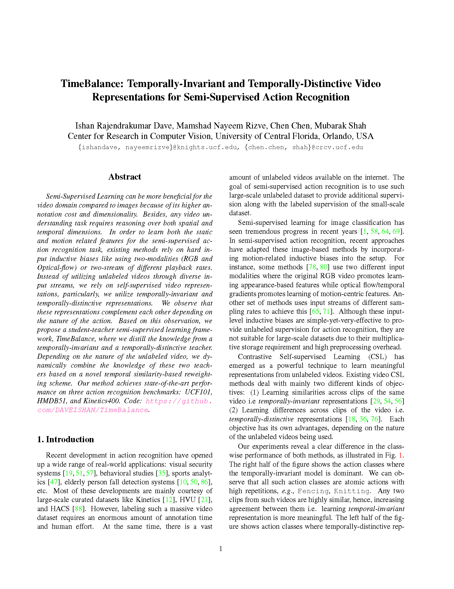

|
|
|
|
|
|
|
|
|
|
Motivation for Temporally-Distinctive and Temporally-Invariant Representations. In order to leverage the unlabeled videos effectively, we consider two kinds of self-supervised video representation learning techniques with complementary goals: (1) Temporally Invariant Representations (Bottom Right) encourage learning the commonalities of the clips, hence it mainly focuses on learning features related to highly frequent repetitions and appearance. (2) Temporally Distinctive Representations (Bottom Left) encourage learning the dissimilarities between clips of the same video, hence it encourages learning features for sub-actions within the video. The plot shows the activity-wise UCF101 performance difference of finetuned models which were self-supervised pretrained with temporally-distinctive and temporally-invariant objectives. The plot shows extreme 25-25 classes after sorting the all classwise differences.
|
| Semi-Supervised Learning can be more beneficial for the video domain compared to images because of its higher annotation cost and dimensionality. Besides, any video understanding task requires reasoning over both spatial and temporal dimensions. In order to learn both the static and motion related features for the semi-supervised action recognition task, existing methods rely on hard input inductive biases like using two-modalities (RGB and Optical-flow) or two-stream of different playback rates. Instead of utilizing unlabeled videos through diverse input streams, we rely on self-supervised video representations, particularly, we utilize temporally-invariant and temporally-distinctive representations. We observe that these representations complement each other depending on the nature of the action. Based on this observation, we propose a student-teacher semi-supervised learning framework, TimeBalance, where we distill the knowledge from a temporally-invariant and a temporally-distinctive teacher. Depending on the nature of the unlabeled video, we dynamically combine the knowledge of these two teachers based on a novel temporal similarity-based reweighting scheme. Our method achieves state-of-the-art performance on three action recognition benchmarks: UCF101, HMDB51, and Kinetics400. Code: https://github.com/DAVEISHAN/TimeBalance. |
|  |
|
| Our Framework We use a teacher-student framework where we use two teachers: fI and fD. The input clip x(i) is given to the teachers and student to get their predictions. We utilize a reweighting strategy to combine the predictions of two teachers. Regardless of whether the video v(i) is labeled or unlabeled, we distill the combined knowledge of teachers to the student. For the labeled samples, we also apply standard cross-entropy loss. |
| Method | Backbone |
Params
(M) |
Input | #F | UCF101 | HMDB51 | Kinetics400 | |||||||
| 1% | 5% | 10% | 20% | 50% | 40% | 50% | 60% | 1% | 10% | |||||
| PL ICML'13 | 3D-ResNet18 | 13.5 | V | 16 | - | 17.6 | 24.7 | 37.0 | 47.5 | 27.3 | 32.4 | 33.5 | - | - |
| MT NeuRIPS'17 | 3D-ResNet18 | 13.5 | V | 16 | - | 17.5 | 25.6 | 36.3 | 45.8 | 27.2 | 30.4 | 32.2 | - | - |
| S4L ICCV'19 | 3D-ResNet18 | 13.5 | V | 16 | - | 22.7 | 29.1 | 37.7 | 47.9 | 29.8 | 31.0 | 35.6 | - | - |
| SD ICCV'19 | 3D-ResNet18 | 13.5 | V | 16 | - | 31.2 | 40.7 | 45.4 | 53.9 | 32.6 | 35.1 | 36.3 | - | - |
| MT+SD WACV'21 | 3D-ResNet18 | 13.5 | V | 16 | - | 30.3 | 40.5 | 45.5 | 53.0 | 32.3 | 33.6 | 35.7 | - | - |
| 3DRotNet Arxiv'19 | 3D-ResNet18 | 13.5 | V | 16 | 15.0 | 31.5 | 40.4 | 47.1 | - | - | - | - | - | - |
| VideoSemi WACV'21 | 3D-ResNet18 | 13.5 | V | 16 | - | 32.4 | 42.0 | 48.7 | 54.3 | 32.7 | 36.2 | 37.0 | - | - |
| TCL CVPR'21 | TSM-ResNet18 | - | V | 8 | - | - | - | - | - | - | - | - | 11.6 | - |
| TG-FixMatch CVPR'21 | 3D-ResNet18 | 13.5 | V | 8 | - | 44.8 | 62.4 | 76.1 | 79.3 | 46.5 | 48.4 | 49.7 | 9.8 | 43.8 |
| MvPL ICCV'21 | 3D-ResNet18 | 13.5 | VFG | 8 | - | 41.2 | 55.5 | 64.7 | 65.6 | 30.5 | 33.9 | 35.8 | 5.0 | 36.9 |
| TCLR CVIU'22 | 3D-ResNet18 | 13.5 | V | 16 | 26.9 | - | 66.1 | 73.4 | 76.7 | - | - | - | - | - |
| CMPL CVPR'22 | 3D-ResNet18 | 13.5 | V | 8 | 23.8 | - | 67.6 | - | - | - | - | - | 16.5 | 53.7 |
| TACL TSVT'22 | 3D-ResNet18 | 13.5 | V | 16 | - | 35.6 | 50.9 | 56.1 | 65.8 | 34.6 | 37.2 | 39.5 | - | - |
| TACL TSVT'22 | 3D-ResNet18 | 13.5 | V | 16 | - | 43.7 | 55.6 | 59.2 | 67.2 | 38.7 | 40.2 | 41.7 | - | - |
| MemDPC ECCV'20 | 3D-ResNet18 | 13.5 | V | 16 | - | - | 44.2 | 50.9 | 62.3 | - | - | - | - | - |
| MotionFit ICCV'21 | 3D-ResNet18 | 13.5 | VF | 16 | - | - | - | 57.7 | 59.0 | - | - | - | - | - |
| Ours (TimeBalance) | 3D-ResNet18 | 13.5 | V | 8 | 29.1 | 47.9 | 69.8 | 79.1 | 83.3 | 49.8 | 51.4 | 53.1 | 17.1 | 54.9 |
| ActorCM Arxiv'21 | R(2+1)D-34 | 33.3 | V | 8 | - | 27.0 | 40.2 | 51.7 | 59.9 | 32.9 | 38.2 | 38.9 | - | - |
| ActorCM Arxiv'21 | R(2+1)D-34 | 33.3 | V | 8 | - | 45.1 | 53.0 | 57.4 | 64.7 | 35.7 | 39.5 | 40.8 | - | - |
| FixMatch NeuRIPS'20 | SlowFast-R50 | 60 | V | 8 | 16.1 | - | 55.1 | - | - | - | - | - | 10.1 | 49.4 |
| MvPL ICCV'21 | 3D-ResNet50 | 31.8 | VFG | 8 | 22.8 | - | 80.5 | - | - | - | - | - | 17.0 | 58.2 |
| CMPL CVPR'22 | 3D-ResNet50 | 31.8 | V | 8 | 25.1 | - | 79.1 | - | - | - | - | - | 17.6 | 58.4 |
| Ours (TimeBalance) | 3D-ResNet50 | 31.8 | V | 8 | 30.1 | 53.5 | 81.1 | 83.3 | 85.0 | 52.6 | 53.9 | 54.5 | 19.6 | 61.2 |
|  | Ishan Rajendrakumar Dave, Mamshad Nayeem Rizve, Chen Chen, Mubarak Shah. TimeBalance: Temporally-Invariant and Temporally-Distinctive Video Representations for Semi-Supervised Action Recognition Proceedings of the IEEE/CVF Conference on Computer Vision and Pattern Recognition. (hosted on ArXiv) |
Acknowledgements |